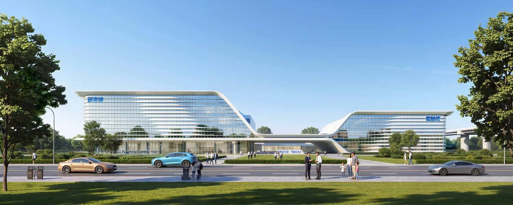

HEFEI NW2 INDUSTRIAL CAMPUS
合肥高新区 NW2 地块厂房
超级智环，未来厂房
安徽 · 合肥
生产厂房 · 产业园 / 2026.03

- 地点
- 安徽 · 合肥
- 年份
- 2026.03
- 类型
- 生产厂房 · 产业园
- 阶段
- 投标方案
- 参与
- 项目设计参与 · 团队协作
- 设计团队
- 深圳市建筑设计研究总院有限公司合肥分院
PROJECT / 项目
方案以集中生产建筑为主体，结合配套空间与园区入口形成清晰的功能结构。连续的建筑轮廓与庭院空间共同组织厂区，在生产效率、运输关系与工作环境之间建立平衡。
01 / DESIGN集中生产与园区布局
以明确的生产主体和配套单元组织基地，协调建筑、道路及入口关系。
02 / DESIGN建筑界面与到达
通过连续水平构件、入口退让和庭院空间，建立可识别的厂区形象。
03 / DESIGN面向日常使用的空间
在生产建筑之间保留景观与步行空间，使内部公共活动和生产组织相互协调。